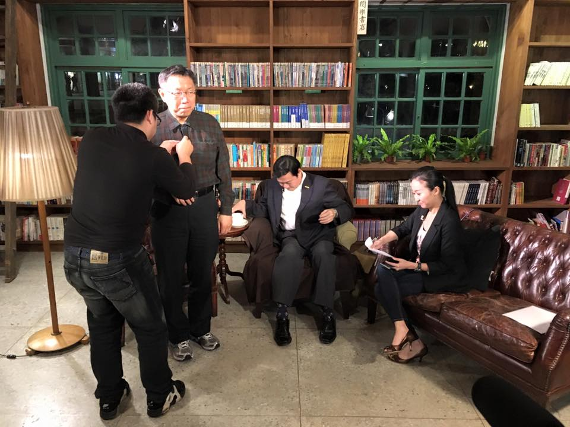
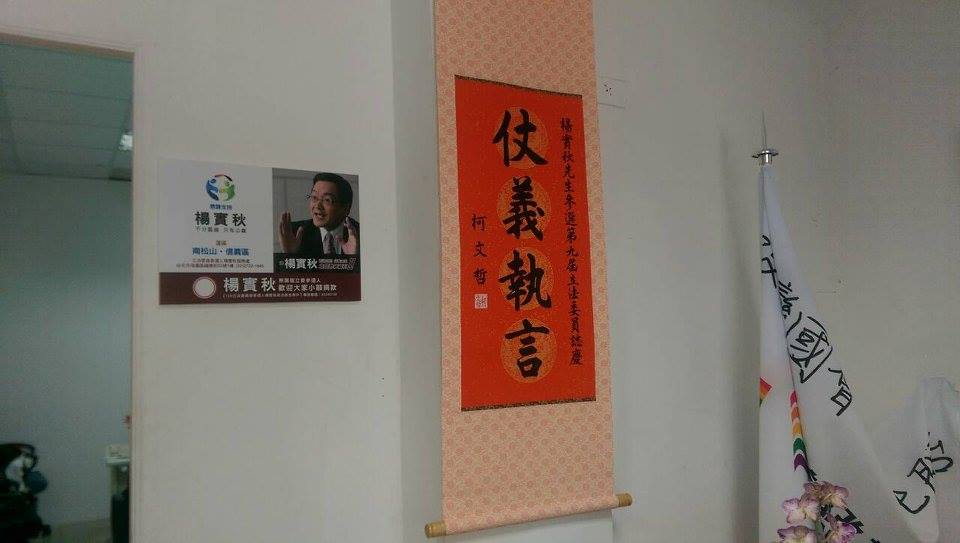
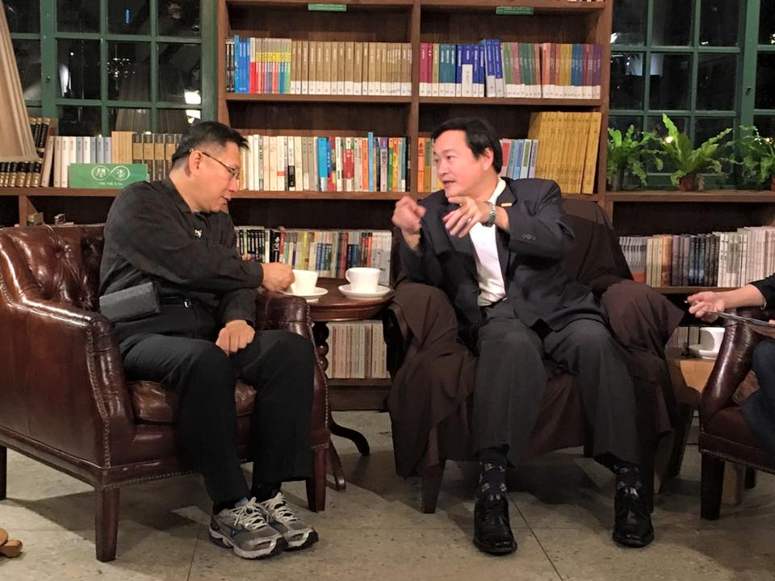
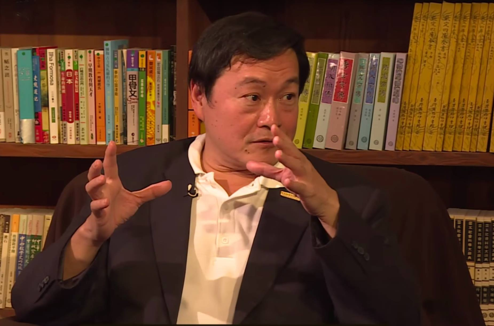

信義南松山區楊實秋，有 21 年的台北市議員資歷。更令人注目的是，楊實秋在蔣介石過世的那一年加入國民黨，黨齡 40 年。因為屢次發表不當言論損害黨的利益，以及加入柯市府的廉政委員會，被國民黨開除黨籍。接著，楊實秋在一個月內宣布參選立委，對上連任三屆的費鴻泰。對手非常強勁，最近兩屆的差距都在 30% 以上。楊實秋將如何面對？請看今晚的對談：
身為第一位接受 PTT 訪問的國民黨籍議員，楊實秋在網路上很受矚目，網友們都叫他秋哥。被國民黨開除之後，會覺得解脫了嗎？楊實秋說，被開除之後雖然海闊天空，但收到小額政治獻金最多，壓力很大。從金額的大小也看得出來，南北差距很大。這也影響到他的競選方式，實在捨不得拿這些血汗錢來掛看板、買廣告，所以在選區內完全看不到秋哥的看板。
獨樹一格的楊實秋，尤其特別的是他從來沒有設過競選總部。78 年競選的時候，他在牛肉麵店裡擺一張桌子就選了。他認為選舉應該要生活化，花大錢選舉就會有 A 大錢的慾望，他還是寧可用平常生活的節奏來做。今年還是第一次設立競選總部，但也是個非常樸素、不起眼的迷你總部，連椅子都是總幹事從家裡臨時搬過來的。楊競選總部的狹小、寒愴，主持人和柯 P 都紛紛表示不可思議。
既然跟國民黨有 40 年的愛恨情仇，當然還是要談談「國民黨不倒，台灣不會好」這句話。楊實秋指出，國民黨在配票單當中，指稱他是叛徒。但他認為「民主政治就是背叛的政治」，雖然少數服從多數，但更重要的是，多數是變動的。選民發現你做不好下次就會背叛你。誰做不好就要背叛他，這樣大家才會戰戰兢兢，才會精進。所以說他叛徒，他覺得不需要解釋。看到一個政黨淪落到靠砸錢來選舉，也是蠻可悲的。
楊實秋話鋒一轉，說自己昨天接到張慶忠（半分忠）的電話，澄清國民黨的選舉補助款不是六百萬起跳，最起碼張自己就沒有拿到六百萬。但不管幾百萬，跟民意累積出來的小額捐款相比，都是天文數字。國民黨的民意代表自然會跟民意越來越遠。他也提到自己從五年前就在質詢美河市弊案，對於抓弊、審查預算從來沒有妥協。甚至在接連兩次違逆黨意遭到處分之後，獲得反對政策性預算可以不受黨紀處分的特權。
楊實秋質詢郝龍斌
昨日美河市案一審宣判，聯合開發處前處長高嘉濃、前課長王銘藏依圖利罪各判徒刑10年、4年徒刑。楊實秋於2011年就曾針對美河市案公開向郝龍斌市長質詢。當時楊實秋就向郝龍斌市長表示，美河市案是楊實秋自民國78年擔任議員到現在，看到這個案子，只能用4個字來形容，「痛恨！可惡！」。昨日的判決，美河市如此龐大的聯開案絕不可能只由捷運局聯開處這種二級單位首長決定，絕對有高層縱容，讓兩名小官上下其手。影片為2011年5月26日第11屆第01次定期大會市政總質詢。Youtube連結：https://youtu.be/YPoeVSzgE5Y《美河市案害北市府虧5億 北捷前處長判10年》2015年12月28日蘋果日報記者張欽／台北報導http://goo.gl/C4q1Ng《告郝龍斌瀆職 楊實秋出庭籲重查美河市》2015年12月10日蘋果日報記者顏凡裴、胡守得／台北報導http://goo.gl/atQXnm《美河市案宣判 柯文哲：就是「有兩個小官非常的賤」》2015年12月28日NOWnews記者邱明玉／台北報導http://www.nownews.com/n/2015/12/28/1938474
由楊實秋貼上了 2015年12月28日
在這裡楊實秋談起跟民進黨的合作，他感謝民進黨在法案和政策性預算上尊重他的主體性，讓他能夠有自己的判斷，不必受限於黨團。蘇嘉全坦然地說，如果民進黨不對，你就監督我們。這讓楊實秋覺得和民進黨的合作，給了他更大的空間。柯Ｐ談起自己送給楊實秋的中堂：「仗義直言」，為楊實秋大呼不平，如果是說謊、貪汙、犯罪就算了，哪有講真話的議員被開除的道理？
但網友還是不滿足，追問秋哥到底為什麼在國民黨待得下去？除了說起國民黨私底下給他反對政策性預算的特權，讓他覺得有受到尊重之外，楊實秋坦承自己有溫情主義的一面。不論是新黨旋風、或者親民黨出走的時候，楊實秋都覺得放不下老朋友。尤其在 1129 之後，國民黨糗到爆了，楊實秋覺得這時候離開有點殘忍。如今被開除，也算是仁至義盡。
往者已矣，但過去在黨內有沒有提過黨產問題呢？楊實秋說早在去年就有跟連勝文說，連的知名度已高，沒必要大張旗鼓選舉，應該要低調、簡樸，畢竟他出入帝寶的家世，就讓人感覺很遙遠。他也有提過應該將黨產捐作公益，現在國民黨黨產就算捐出去都擺不平，人民的期望是要清算才行了。畢竟「有鈔票就沒有選票，有黨產就沒有未來」，但他們還是迷信廣告還有半日工的做秀行銷。
談起美河市弊案，楊實秋說自己大概是第一個把調查局找來旁聽的，就是因為調查局不受市府管轄。原本資料都要不到，關鍵是有位法務局長後來當了監察官，才陸續提供了資料。但楊在那之前就覺得鑒價有問題，最後才抓到這兩個人。楊實秋語帶保留地說，郝龍斌可能不知情，但工程專業的副市長難免怠忽職守
柯 P 則認為美河市的判決結果，判了兩個小官徒刑，居然形成沒有行賄者的犯罪局面。難道說這兩個官員這麼賤，沒有人送錢來行賄，也沒有長官指使，就自己熱臉貼冷屁股，要送錢給廠商？柯 P 比比自己的膝蓋，用膝蓋想也知道不可能的事情嘛！楊實秋接著補充，這個案子還沒完，市府拿三棟住宅換了個租不出去的蚊子館，把黃金給廠商，垃圾搬回市府，這當中不知道又有多少利益輸送。柯 P 也表示自己看到會議記錄，理由之荒謬讓他不可思議，換回來的東西他也不知道怎麼處理。
楊實秋順著這個話題談起軍宅案。他認為王如玄雖然道歉，但王在整個軍宅案結構中，其實是下游中的下游。軍宅案繼續往下挖，會成為軍方的美河市。整個軍宅連土地算進去將近一兆，造價不低品質卻很差，發包過程就賺一手、分配過程又再賺一手。真正的大錢是軍方這整個共犯結構賺走了，但軍方也沒人出來道歉，誰又敢辦這個案子呢？
對於大巨蛋的問題，楊實秋認為馬簽約、郝開挖，他們兩個都要負責任。但現在怎麼做，首先要解決工安問題、調整座位數，畢竟四、五萬人大型演出的機會不多。其次考慮做成巨型溫室，商場再用公開招標。柯 P 則認為大家想的方向差不多，等到方案規劃好，就要找趙藤雄來做最後談判。
對於人人有獎的各種補助款，楊實秋非常質疑，聖誕老公公誰都會做，但財政問題越來越嚴重，市長要有勇氣來拒絕這種事情。比方公車補助當時的背景是高油價，但現在油價跌下來了，就該重新調整。楊實秋講白，公車補助砍不掉，其實是議員在冀望車箱廣告的折扣。但這是省下議員的小錢，花了人民公帑的大錢。包括跨年煙火，他指出「全世界只有台灣一年放 23 場煙火」，所以在市議會也屢次提議要交由民間來辦，不要由政府編列預算。政府應該把錢花在該用的人身上，不該用花錢比賽來討好人民。
談起年金制度，楊實秋認為如今最糟糕的是老啃族，富貴老人啃國家。退役一級上將（楊：我不說是郝柏村了）終生月領 25 萬，反而是 25K 的在幫月領 37 萬的富貴老人養孫子，這都太超過了（柯Ｐ馬上補刀：你是在講連戰）。
他主張要用 GDP 做基準，按 150% 的比例設定年金上限。畢竟年金福利只是要讓人們生活無虞，不是要榮華富貴。柯 P 認為年金不改革，台灣會變希臘，他也很擔心小英上台有沒有勇氣改。針對 18%，楊實秋也主張應該比照市場利率做調整，不能把高利時代的 18% 搬到低利時代。楊實秋又補充，希臘的年輕人有辦法就跑了。陷入加稅流失人才，不加稅財政崩潰的兩難。
談到河川整治問題。楊實秋指出，真正 A 大錢的都是合法。五大怪案都有堅強的法律團隊，所以在法律上都無懈可擊。河川土地徵收也要小心這樣的問題，比方內溝溪的整治，工程款才五千萬，土地徵收卻要 30 億。因為沒人要的河川地，民意代表買下之後，卻會要求政府按照周邊住宅的標準來鑒價徵收，是拿河川整治的名目，來染指土地徵收的利益。這和既成道路一樣，都是民意代表合法Ａ錢的管道。
唯一出問題的，是 94 年在台南有個議員沒有分到，跑去跟調查局檢舉。爆了那麼多秘辛，楊實秋知道自己這些年擋了很多人的財路，所以特別感謝那些Ａ錢的民意代表：「至少他們沒把我打死」。
進入國會之後也準備像過去這樣，監督自己的同仁嗎？楊實秋認為每個人都需要被監督，四年一次的投票根本來不及，期待媒體也不切實際，所以需要用公開透明的方式來監督。談起媒體評鑑，楊實秋談起過去的荒謬案例，一位全年沒來開會的議員居然在評鑑中名列前茅，當中的評鑑標準都別有居心。
談到多元性別平權法案。楊實秋談到自己的孩子很早熟，看了孽子之後就跑去新公園認識很多同志朋友，所以他家裡常有年輕同志出沒。對於同性戀朋友，他絕對尊重，這是人權。但多元成家牽涉的範圍比較廣泛，包括家庭、繼承權等等。為了對教會的牧師和教友負責，他對多元成家持保留態度。他也大方地說，如果你覺得多元成家是最重要的，不能接受我持保留態度，那就投給別人。這就是民主。就像他也常說，如果你覺得候選人到菜市場擺攤是最重要的（費鴻泰的招牌是唯一到市場去擺攤的立委），那你就投給費鴻泰吧。柯Ｐ冷冷吐槽：一件事情全世界只有你一個人在做，通常就是件很奇怪的事情。
楊實秋也贊成公民權要下修到 18 歲，他表示自己 18 歲時的世界只有課本，但現在 18 歲的孩子可以從網路上看到全世界。「現在孩子的判斷力比我們那時候強太多了」。柯 P 則補充，18 歲就適用刑法，基於權利義務對等的原則，沒道理沒有公民權，這是世界潮流。
楊實秋在網路上廣受年輕人歡迎，他覺得現在的年輕人有什麼不同？楊實秋語重心長，現在的年輕人沒有升學的壓力，但沒有作夢的權利。我們那時候肯努力，就有未來。現在的年輕人自己都沒有未來，怎麼敢生孩子，這是現在年輕人比較辛苦的地方。
楊也贊成修改選罷法，下調罷免門檻。楊實秋認為民意代表也需要被監督，不能只靠四年一次的投票，所以罷免門檻當然要調低。與其擔心改選頻繁的問題，反而要擔心民意代表沒有被監督，一個個變成恐龍民代。
談到監察院，柯 P 快人快語，指出監察院四年沒運作，政府也好好的。顯然監察院是這台機器中不需要的零件。
如果落選要不要入閣或者入府？楊實秋坦言，他覺得自己不適合做官員。他對議員的作為太熟悉了，哪個人胡搞，哪個人不來開會他都很清楚。要是被那些不上道的議員質詢：「我覺得我可能會翻臉」。
談起楊實秋的對手費鴻泰，柯 P 回想 MG149 案，當時帶頭誣陷就是費鴻泰。費不只把台大醫院院長叫過去罵，還為此大罵審計長。但沒有的東西就是沒有，費鴻泰罵審計長混吃等死，難道非要查到有才行嗎？楊實秋也特別感謝柯 P，在 11 月就表態支持他。柯 P 認為，費鴻泰和楊實秋的對決，是黨意代表和民意代表的對決，應該要投給民意代表才對。
楊實秋最後呼籲所有年輕人出來投票，不然就是讓別人決定你的未來。「不投票不代表你清白，只代表你不負責任」。金句一出，留言板上一片狂推，捲起一陣秋哥旋風。對談至此爽颯結束，明天同一時間，柯文哲夜問新國會最後一場唷！